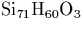
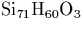
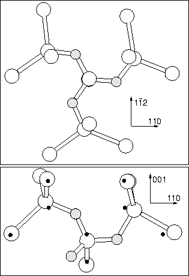

This section covers our work to date, however further work is required before we can make any definitive statements on the nature of the trimer.
There are many possible configurations for three oxygen atoms.
Electrically active configurations will be examined in
Chapter 9 so we restrict ourselves to neutral complexes
here. In this case there are two primary possible structures, a
linear chain (an extension of the dimer along  110
110 , see
Figure 6.14), or placing all three Oi atoms around
the same core Si as shown in Figure 6.13 (in this
structure the oxygens all bow `clockwise' around the defects C3
axis, earning it the name the `Manx' defect!). We relaxed both of
these structures in a 134 atom cluster, , and
found the Manx structure to be 0.248 eV more stable. There is in
addition a third possible structure consisting of a dimer with an
appended oxygen atom that sits in a perpendicular
, see
Figure 6.14), or placing all three Oi atoms around
the same core Si as shown in Figure 6.13 (in this
structure the oxygens all bow `clockwise' around the defects C3
axis, earning it the name the `Manx' defect!). We relaxed both of
these structures in a 134 atom cluster, , and
found the Manx structure to be 0.248 eV more stable. There is in
addition a third possible structure consisting of a dimer with an
appended oxygen atom that sits in a perpendicular  110
110 plane,
thus oxygen atoms sit in three of the six bonds around a hexagonal
ring site. This may be more stable as the stress will be spread over
two planes. Nothing is currently known experimentally concerning the
symmetry of the trimer.
plane,
thus oxygen atoms sit in three of the six bonds around a hexagonal
ring site. This may be more stable as the stress will be spread over
two planes. Nothing is currently known experimentally concerning the
symmetry of the trimer.
The vibrational modes of the linear and Manx structures are given in Table 6.7.1. The linear structure gives modes which are close to those of the dimer, although these calculations would suggest slightly higher. The Manx structure has modes that are very different. This suggests that the trimer may be the linear O3i structure, since experimentally its vibrational mode at 1006 cm-1 is only 6 cm-1 away from the primary dimer vibration at 1012 cm-1. Although these calculations predict a slight increase in this mode as opposed to a drop, that could be a cluster size effect, as the end of the trimer chain is quite close to the cluster edge. Alternatively, the `half hexagon' structure described above might be expected to have perturbed dimer-like modes.
|  |
| 3c`Linear Chain' structure | 3c`Manx' structure | ||||
| 16O | 17O | 18O | 16O | 17O | 18O |
| 1080.5 | 24.4 | 46.5 | 1176.8 | 23.6 | 44.7 |
| 948.9 | 21.6 | 41.1 | 1154.3 | 23.6 | 44.9 |
| 849.9 | 20.3 | 38.7 | 978.2 | 27.0 | 51.6 |
| 733.3 | 11.3 | 21.2 | 737.9 | 12.5 | 23.6 |
| 655.7 | 13.2 | 24.8 | 713.5 | 10.4 | 19.8 |
| 630.1 | 5.4 | 10.5 | 598.4 | 8.0 | 14.5 |
| 570.5 | 8.3 | 15.4 | 555.1 | 7.5 | 14.7 |
| 552.2 | 1.9 | 4.2 | 511.4 | 6.1 | 11.8 |
| 525.3 | 4.4 | 8.2 |